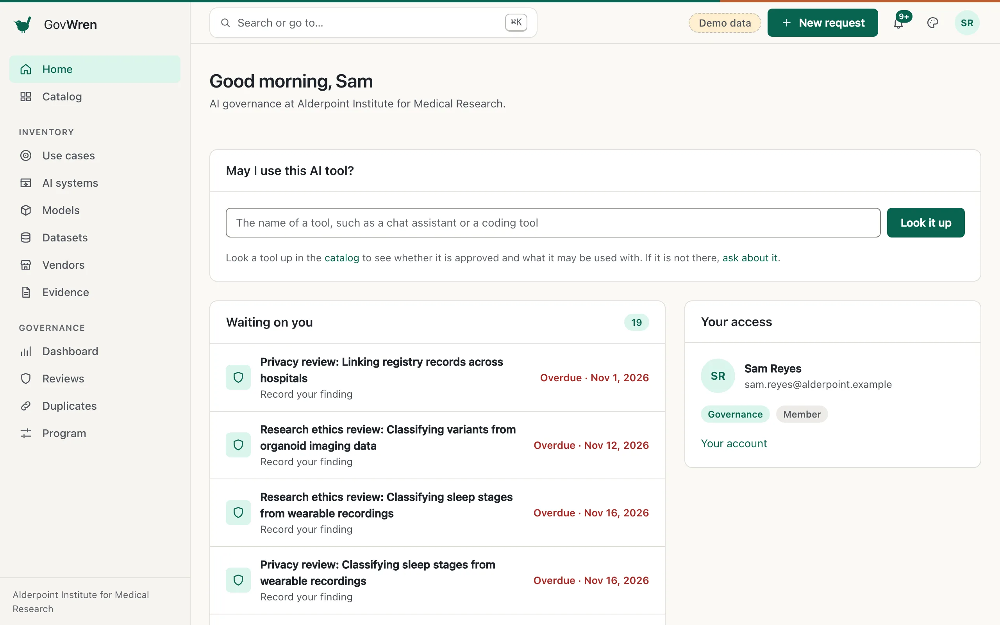
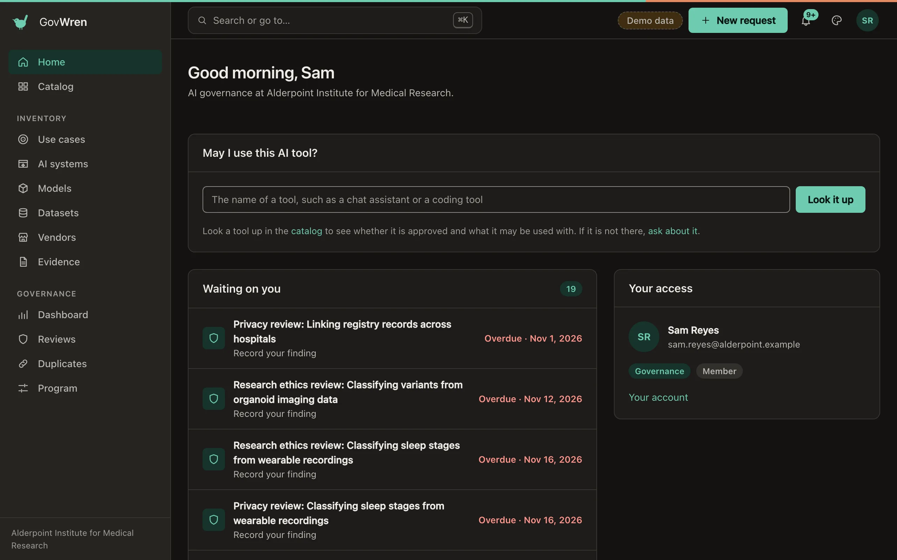
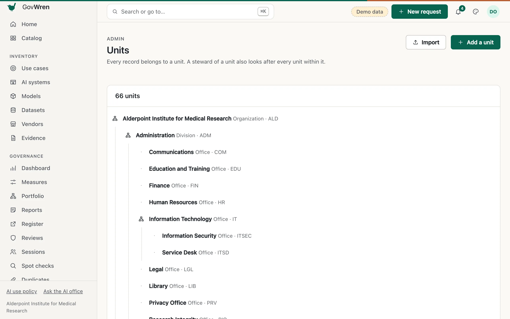
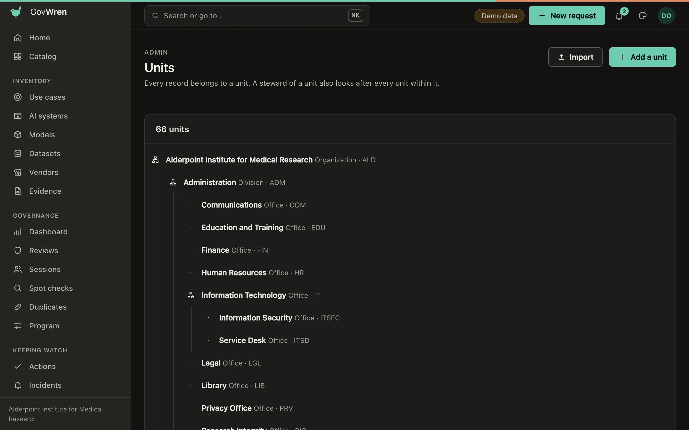
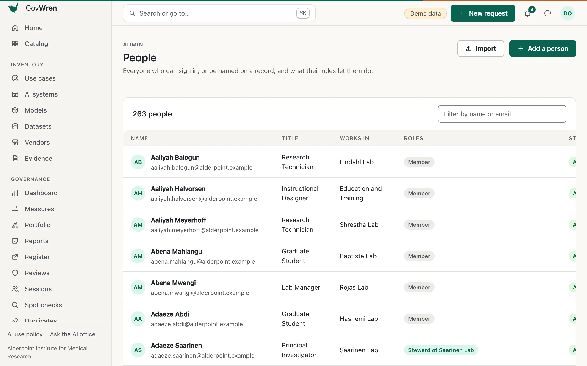
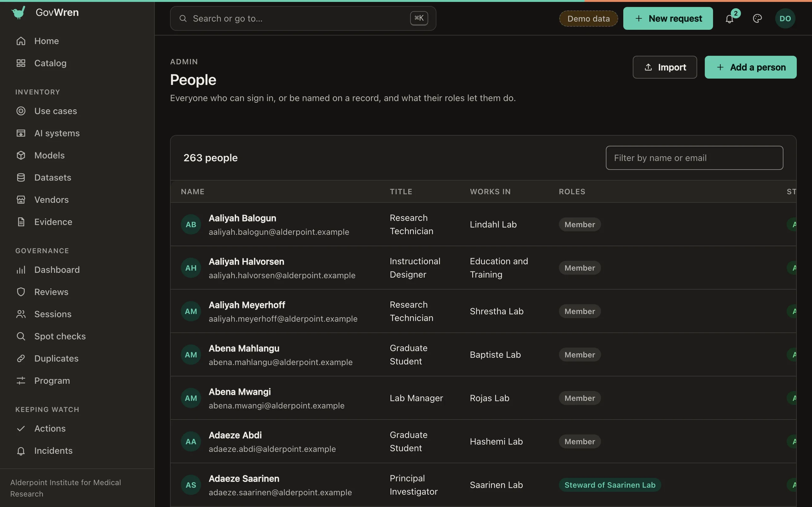
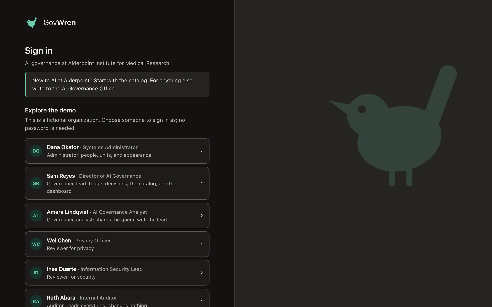

Getting started
This guide takes you from nothing to a running GovWren that your organization can sign in to. It is for whoever installs it and sets it up. Allow about fifteen minutes.
If you only want to look around first, skip to Explore the demo organization.
What you need#
- uv, which provides the right Python (3.12 or later).
- A copy of this repository.
Every command in these guides is run through uv run govwren … from the repository directory. The full list is in the command reference.
Install#
uv syncSet up the installation#
uv run govwren initinit does five things:
- Writes
govwren.toml, the deployment settings, in the current directory. - Creates the data home,
./var, which holds everything that is not in the database. - Creates the database. With no other setting, this is a SQLite file inside the data home.
- Loads the default program: the request form, the scoring model, the routing rules, and the standard conditions.
- Asks for your email address, your name, and a password, and creates the first administrator.
The password needs at least 12 characters. Length matters more than symbols: a few unrelated words make a good one. It may not contain the name part of your email address.
init is safe to run again. It leaves an existing configuration file alone and creates an administrator only if there is none.
To set up without being asked anything, name the administrator and pipe the password in:
printf '%s' "$ADMIN_PASSWORD" | uv run govwren init \
--admin-email you@example.org --admin-name "Your Name" --password-stdinCheck it#
uv run govwren doctordoctor checks the configuration, the data home and its free space, that the database answers, that its schema is the one this version expects, that the database still refuses changes to the history, and that the history verifies. It exits with 1 if anything must be fixed.
Run it#
uv run govwren serveThe server prints its address, by default http://127.0.0.1:8000. Use --port to pick another port.
serve refuses to start in three cases, and says what to do in each:
| It says | Do this |
|---|---|
| The database schema is behind | uv run govwren db upgrade |
| There is no administrator yet | uv run govwren users add you@example.org --name "Your Name" --role admin |
| The port is already in use | Stop what is using it, or pass --port |
As installed, GovWren listens only on the machine it runs on. To put it in front of other people, read Configuration first.
Sign in for the first time#
Open the address in a browser and sign in with the email address and password you gave init.
Out of the box, people sign in with local accounts: an email address and a password held by GovWren. To let them use the account your organization already gives them, see Single sign-on. To send notices by email, see Email.
- Five failed attempts within fifteen minutes lock sign-in for that account for a few minutes.
- A sign-in ends after 12 hours without activity, and after 7 days in any case. Both are settings.
- To change your password, open the account menu at the top right and choose Your account. Changing it signs out your other sessions.
- If you cannot sign in at all, reset the password from the command line:
uv run govwren users reset-password you@example.org.
Find your way around#
The sidebar shows only what your roles let you use.
| Section | Pages | Who sees them |
|---|---|---|
| (top) | Home, Catalog | Everyone |
| Inventory | Use cases, AI systems, Vendors | Everyone |
| Governance | Dashboard, Reviews | Dashboard: governance, auditors, administrators. Reviews: those and reviewers |
| Admin | People, Units, Appearance | Administrators |
The top bar has Go to…, New request, the bell for your notices, Appearance, and your account menu.
- Go to… opens the command palette. Press
⌘Kon a Mac orCtrl Kelsewhere, or/when you are not typing in a field. Type to filter, use the arrow keys to move, and press Enter. - Appearance sets light, dark, or system mode and one of three palettes (Wren, Slate, Garnet) for you alone. The choice is remembered in your browser.


Finish the setup checklist#
Until the installation is set up, an administrator's Home shows a card, Set up your installation, with three steps. Each has a button that opens the right page.
1. Describe your organization#
Open Units. Every record in GovWren belongs to a unit, so this comes first.
- Choose Add your organization. This is the top unit. There is only one.
- Use Add within on any unit to add the divisions, departments, and labs beneath it. Units can nest to any depth.
- Give each unit a short, permanent Code, such as
HALE. Imports match units by code.
If you already have the structure in a spreadsheet, choose Import instead. See Import units and people from CSV.


2. Add the people who will run the program#
Open People and choose Add a person. Enter a name and an email address. Then either:
- set a password, and tell them what it is, so they can sign in at once; or
- leave the password empty. The person is added as invited. They can be named on records straight away, and can sign in once you set a password for them.
Open a person to set the units they work in and their roles.
| Role | What it is for |
|---|---|
| Admin | Accounts, units, appearance, and the installation itself |
| Governance | Running the program: triage, decisions, the catalog, any record |
| Reviewer | Review tasks for the review functions they are given |
| Auditor | Reading everything, changing nothing |
| Steward | Looking after the records of one unit and the units within it |
| Member | Everyone who can sign in: browse, request, and manage their own records |
Two things to know at this point:
- An administrator is not governance. The administrator can read and edit every record, but cannot triage, review, or decide a request. Give the governance role to whoever will run the program. That can be you.
- Requests that need a review need reviewers. The default rules send requests to review functions such as privacy and security. Give at least one person the reviewer role for each function you will use.
Running the program describes each role in full.


3. Make it yours#
Open Appearance to set the product name, your organization's name, a default palette, an accent color, and your logos. A preview shows your choices before you save. See Set the appearance.
The checklist marks a step done when there is at least one unit, when there is more than one account, and when an organization name, logo, or accent color has been set.


What to do next#
- Add the AI tools your organization has already evaluated to the catalog, so people get an answer the first time they look. See Running the program.
- Read the default risk tiers and routing rules, and decide whether they suit you. See Running the program.
- Point people at Requesting, and reviewers at Reviewing.
Explore the demo organization#
The demo is a complete, fictional organization: the Alderpoint Institute for Medical Research. It has thirty months of history, with 66 units four levels deep, about 260 people, 40 vendors, 90 AI systems, and 300 use cases at every stage, tier, and standing.
uv run govwren demo
uv run govwren --config demo/govwren.toml serveThe first command builds the demo in ./demo, with its own configuration, data home, and database. It does not touch your own installation. The second starts it on port 8010.
The sign-in page of a demo lists nine sample people. Choose one to sign in as them; no password is asked for. Between them they cover every role: an administrator, two people in governance, a privacy reviewer and a security reviewer, an auditor, a division steward, a principal investigator who is steward of her lab, and a researcher.
Things to know about a demo:
- Every page carries a Demo data flag.
- It is made by the same code the app uses, under a simulated clock, so its history verifies like any other.
- The same seed builds the same organization.
uv run govwren demo --seed 7builds a different one, and--forcerebuilds one that is already there. - It listens only on the machine it runs on. See The demo and the network.
- To remove it, delete the
demodirectory.


SQLite or PostgreSQL#
GovWren runs on either, with the same features and the same data model.
| SQLite | PostgreSQL | |
|---|---|---|
| Set up | Nothing to do. It is the default | Needs a server, a database, and one setting |
| Where the data is | One file, var/govwren.db | The database server |
| Good for | Trying it out, a pilot, a small team | Many people at once, more than one server process |
| Back up | The data home, as a whole | The database, and the data home |
Start with SQLite unless you already know you need PostgreSQL. Configuration shows how to set PostgreSQL up.
Keep it healthy#
| To | Run |
|---|---|
| Check the installation | uv run govwren doctor |
| Check that the history has not been altered | uv run govwren verify |
| See which schema the database is at | uv run govwren db current |
| Apply schema changes after updating GovWren | uv run govwren db upgrade |
| List accounts, or get back in when nobody can sign in | uv run govwren users list, uv run govwren users reset-password EMAIL |
Back up before db upgrade. An upgrade cannot be undone except by restoring.